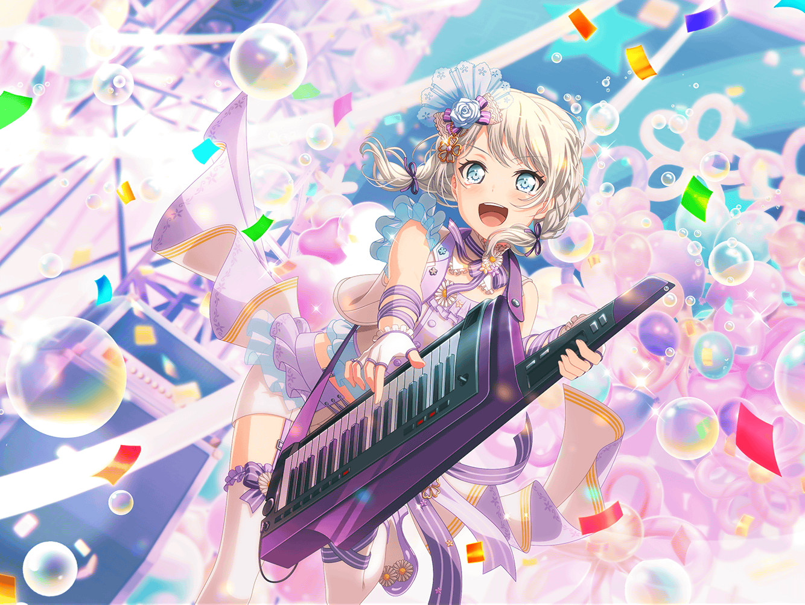

ショッピングモール
イヴ
{{userName}}さんっ！
イヴ
こんにちは！ 今日はお買い物ですか？
イヴ
CiRCLEの買い出しに……
そうでしたか、お仕事お疲れさまです！
イヴ
はい！ 今日はオフだったので、お買い物に来たんです
イヴ
……あ！ {{userName}}さん、
先日のライブ、見にきていただきありがとうございました
イヴ
すごく感動した……？
そう言ってもらえると本当に嬉しいです！
イヴ
あの日のライブは、私にとってもパスパレにとっても
特別なライブだったんです
イヴ
両親や学校の皆さん、Afterglowの皆さん……
たくさんの方が見にきてくれたんですが、
皆さんもとっても喜んでくれました！
イヴ
ですが……練習のときよりもうまくできなくて、
とても悔しかったんです……
イヴ
まだまだ未熟者ではありますが、
『夢』を叶えるためにも、不屈の精神でがんばりますっ！
イヴ
すごい気合いですか？ はい、みなぎっています！
もっともっとブシドーを磨いて、日々精進します！
イヴ
……実は、本番を迎えるまでにいろいろあったんです
イヴ
個人のお仕事が忙しくなってきたことや、
いろいろなことが重なって、気持ちがバラバラになりかけて……
イヴ
一人でスタジオを掃除しているときには、
みんなとの楽しい思い出ばかりがよみがえってきました
イヴ
とても寂しくて……パスパレは私にとって、
なくてはならない、唯一無二の存在なんだと改めて思いました
イヴ
——でも、そのことがあったおかげで、
お互いに本音でぶつかり合うことができたんです！
イヴ
皆さん、パスパレが好きだという気持ちを
まっすぐに伝えてくれて……みんな同じ気持ちなんだと感じて、
涙が出そうなほど嬉しかったです！
イヴ
{{userName}}さん、これを見てください。
スタジオで、みんなで写真を撮ったんです
イヴ
はい、自撮りというやつです！
アヤさんのスマホで撮影しました！
イヴ
みんなの笑顔が溢れていて、
見るたびに幸せな気持ちでいっぱいになるんです
イヴ
こうやって、パスパレのみんなとの思い出が増えていくことが、
私、とっても嬉しいんです……！
イヴ
あっ、すみません。夢のお話をしようとしていたんでした
イヴ
パスパレメンバー五人で、『最高のステージ』をする——
それが、パスパレの夢です！
イヴ
パスパレの夢で、私の夢でもあります！
イヴ
あっ、もちろん、
サムライになる夢も忘れたわけではありませんよ
イヴ
はいっ！ ありがとうございます！
パスパレみんなで夢を叶えてみせます。ブシに二言なしです！
イヴ
最高のステージを{{userName}}さんにも
お見せできるよう、これからもがんばります！
よろしくお願いしますっ！